Slide Reference
A copy of the slides your facilitator presents at the start of the session, for reference during or after the workshop.
What This Workshop Builds
In this session you'll set up a small but complete Snowflake-native finance analytics environment, then experience it from two different AI vantage points: CoCo, a coding agent for hands-on exploration, and CoWork, a conversational research assistant grounded in governed business definitions.
The environment has three layers: a curated data foundation (6 tables covering invoices, vendors, loans, products, and competitor earnings), an intelligence layer (a Semantic View grounding a Cortex Agent), and a consumption layer where you interact through CoCo and CoWork.
Solution Architecture
One setup script builds the data foundation and the semantic layer. From there, CoCo and CoWork give you two different ways to interact with the same governed data.
Products, Earnings
Snowflake Features in Action
Each layer of the environment maps to a specific Snowflake capability. Click a row to see the details.
Data Model & Governance
6 tables store the complete finance dataset: PRODUCTS, EARNINGS_TRANSCRIPTS (covering Coinbase, Robinhood, LendingClub, Marqeta), INVOICES, VENDOR_CATALOG, LOAN_ORIGINATIONS, and LOAN_PERFORMANCE.
Every table carries tags (domain, source_system, data_sensitivity, refresh_frequency) and contacts (Steward, Support, Security & Compliance) — all visible in the Horizon Catalog's Database Explorer.
Semantic View & Cortex Agent
The FINANCE_ANALYTICS semantic view defines the business vocabulary for this dataset — dimensions, facts, metrics, and relationships across all 6 tables, plus verified queries that ground common questions.
The Cortex Agent uses this semantic view to translate natural language into governed SQL — every user gets the same definition of "revenue," "overdue," and "delinquency."
CoCo (Cortex Code)
CoCo is an AI coding agent embedded directly in your Snowsight Workspace. It reads your schema, writes and runs SQL from plain English, and remembers conversational context across follow-ups.
It's trained on official Snowflake documentation and has access to coding skills built by Snowflake's product teams — so the SQL it writes is tuned specifically for Snowflake, not generic guesses. CoCo assumes some SQL/technical comfort.
Today you're using CoCo inside Snowsight Workspaces, but it's also available as a CLI and a Desktop app — so you can bring the same AI coding partner into your terminal or IDE.
CoWork (Snowflake Intelligence)
CoWork is a conversational research assistant backed by the Finance Assistant agent, which wraps the FINANCE_ANALYTICS semantic view via a cortex_analyst_text_to_sql tool plus a data_to_chart tool for visualizations. It's built for non-technical stakeholders who just want an answer.
Results can be saved as Artifacts and shared with colleagues, and repeatable questions can be scheduled as Automations that deliver fresh answers on a cadence.
What the Setup Script Creates
Running 00_L100_Setup.sql once builds your entire environment — infrastructure, data, semantic view, and AI agent — and loads it with a realistic finance dataset.
| Object | Name / Count | What It Is |
|---|---|---|
| Role | FINANCE_HOL_ADMIN | Your permissions for the workshop |
| Warehouse | FINANCE_HOL_WH | Compute engine for your queries (auto-suspends when idle) |
| Database | SOFI_FINANCE_HOL | Top-level container for all workshop data |
| Schema | FINANCIAL | Holds the 6 tables below |
| Tables | 6 | The base tables that make up the FINANCIAL schema |
| Products | 12 rows | Product data table — the financial products SoFi and its competitors offer |
| Earnings Transcripts | 16 rows | Earnings transcripts data table — competitor earnings call text for Coinbase, Robinhood, LendingClub, and Marqeta |
| Invoices | 500 rows | Invoices data table — vendor billing records used for overdue and spend analysis |
| Vendors | 20 rows | Vendor catalog data table — the vendor master list invoices roll up to |
| Loan Originations | 652 rows | Loan originations data table — new loans issued, by product and quarter |
| Loan Performance Rows | 900 rows | Loan performance data table — delinquency and repayment tracking over time |
| Semantic View | FINANCE_ANALYTICS | Governed business definitions layer used by the Cortex Agent, spanning all 6 tables |
| Agent | FINANCE_ASSISTANT | The AI agent CoWork uses to answer your questions |
| Compliance and Domain Tags | steward, support, etc. | Governance metadata readily available in the Horizon Catalog |
SOFI_FINANCE_HOL database.
Step 1 — Environment Setup
Your facilitator walks through this live. It takes about 2 minutes end to end.
Download 00_L100_Setup.sql from the link your facilitator shares. In the left sidebar, click Projects → Workspaces, then click + and select Create workspace. Name it SoFi_L100.
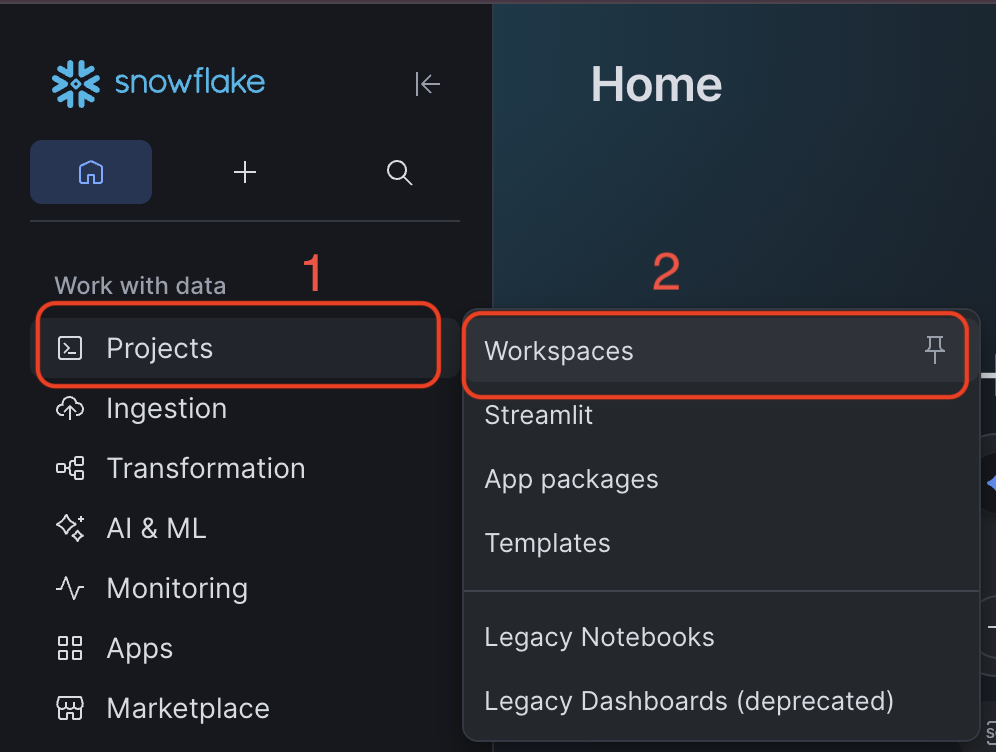
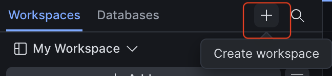
Click + Add new → Upload files and select 00_L100_Setup.sql. Open it, click the dropdown arrow next to the play button, and choose Run all. Wait about 2 minutes — the final query shows a 13-object verification table.
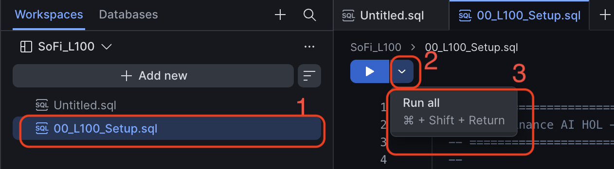
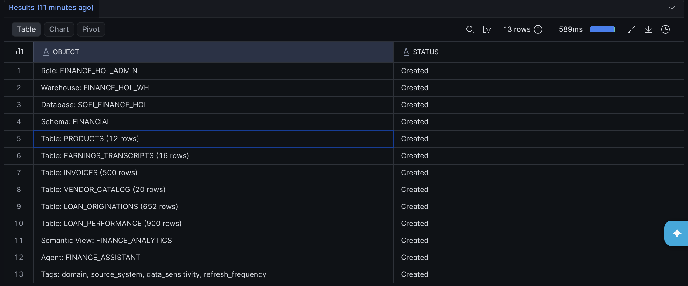
Click your user avatar in the bottom-left corner. Under Switch Role, select FINANCE_HOL_ADMIN and confirm. This ensures CoCo and CoWork use the right permissions.
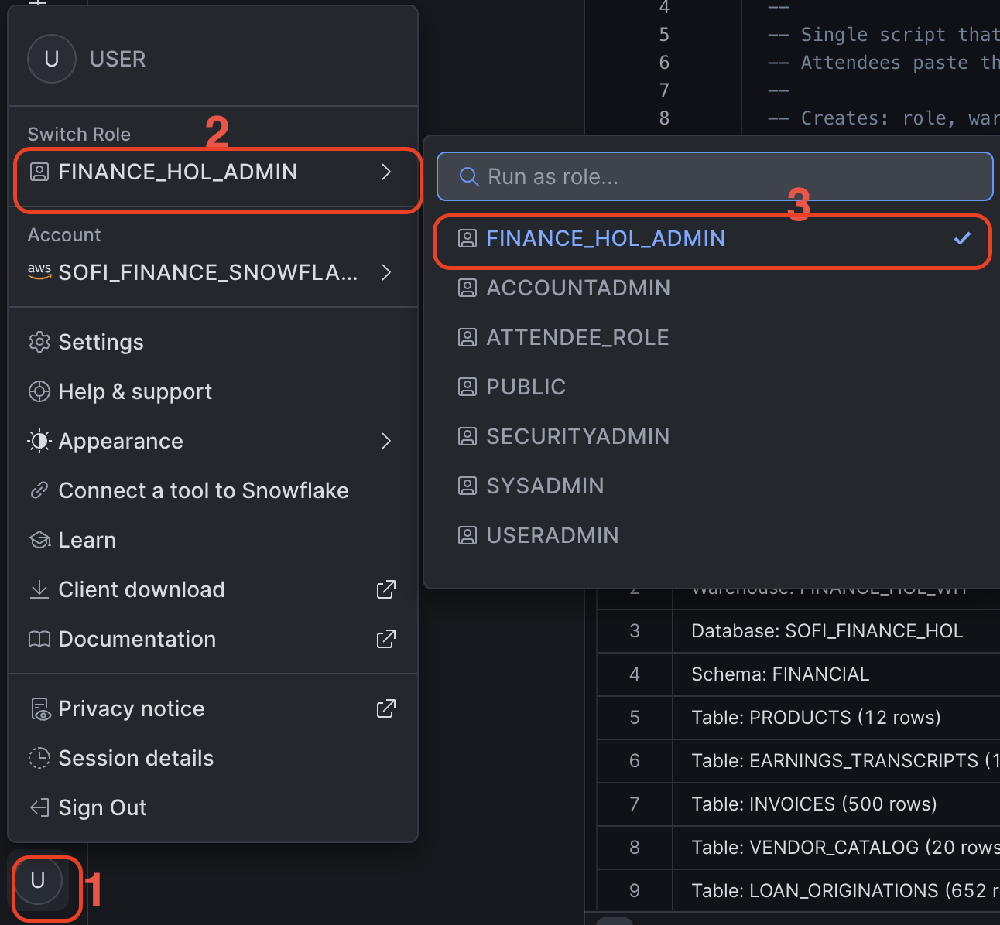
Step 2 — Snowsight Tour
Before jumping into AI tools, take a quick look at the data environment you just created.
In the left sidebar under Horizon Catalog, click Catalog → Database Explorer.
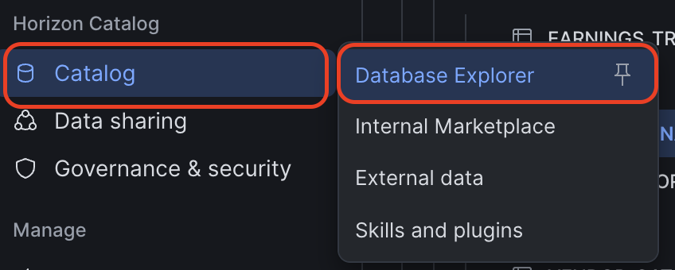
Click into SOFI_FINANCE_HOL → FINANCIAL and open any table (try LOAN_ORIGINATIONS). The Table Details tab shows the description and the assigned Steward, Support, and Security & Compliance contacts.
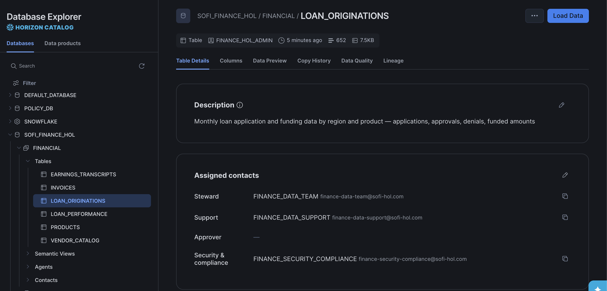
Click the Lineage tab to see how the table connects to the FINANCE_ANALYTICS semantic view — this is how Snowflake tracks data dependencies end to end.
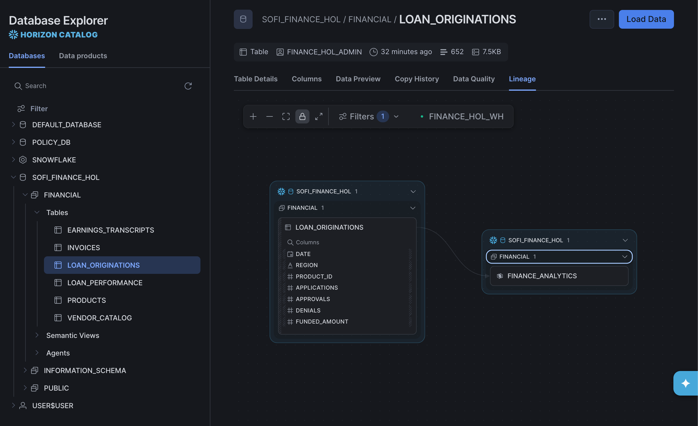
Step 3 — AI Assistants: CoCo & CoWork
Your environment is built and you've toured the catalog — now put it to work with the two AI tools you'll use most. Ask CoCo to explore and query your data directly, then ask CoWork the same kinds of questions in plain English. Copy any of the sample prompts below into CoCo or CoWork as-is, or use them as a starting point for your own questions.
Back in your Workspace, notice the Databases tab — you can browse tables right there too. Click the blue star icon to open CoCo and ask your first question.
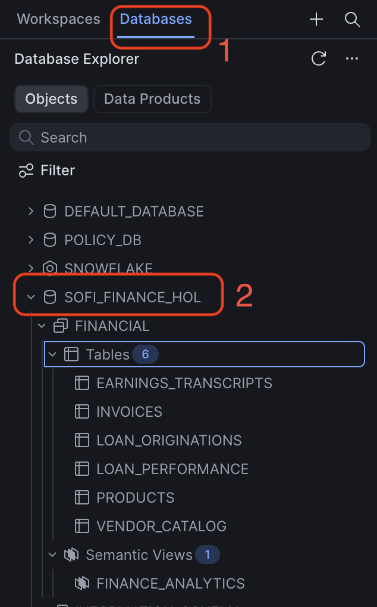
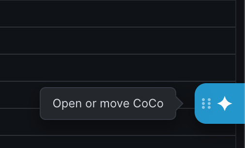
Type a question in the chat panel. CoCo writes the SQL, runs it, and shows results — then keeps context for follow-ups like "now break that down by department."
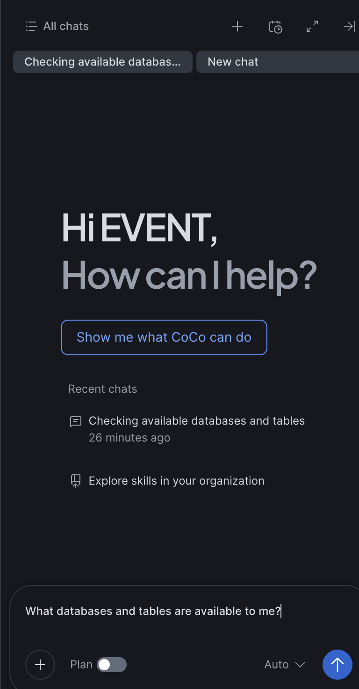
Click AI & ML → Snowflake CoWork. The Finance Assistant agent is already loaded since it's the only agent on the account — just start typing. CoWork routes your question through the Finance Assistant Cortex Agent, which queries the FINANCE_ANALYTICS semantic view.
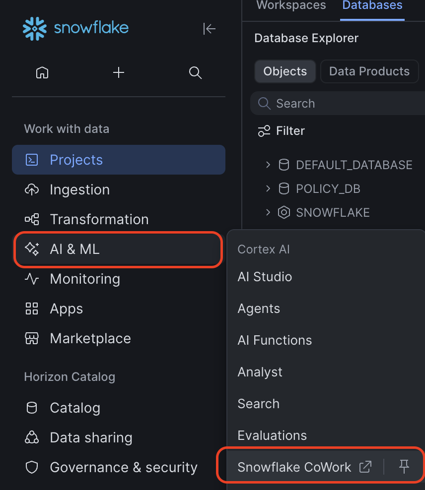
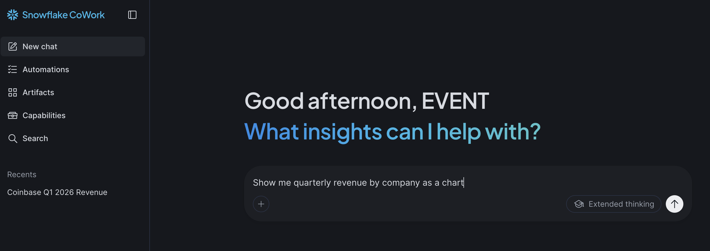
Ask for a chart directly — no exporting to Excel. Save any result you like as an Artifact and share it with a colleague, or set up an Automation to have CoWork deliver a recurring answer on a schedule.
Recap & What's Next
Today you were the consumer: you stood up a governed finance data foundation with one script, then explored it through two AI vantage points — CoCo for hands-on SQL exploration, and CoWork for conversational, chart-ready answers grounded in a Semantic View and Cortex Agent that were already built for you.
The Finance AI Champions series continues in two more sessions, each going deeper for a more targeted audience.
| Level | Focus | What You'll Do |
|---|---|---|
| Level 100 Today | Platform orientation & Cortex AI as a consumer | Tour Snowsight and governance, then use CoCo and CoWork against a pre-built finance dataset |
| Level 200 | Document intelligence & AI Functions | Use CoCo to build with AI_EXTRACT, AI_CLASSIFY, AI_SENTIMENT, and AI_EMBED + Cortex Search — parsing PDFs, classifying documents, and building a searchable knowledge base from earnings transcripts |
| Level 300 | Agents & advanced workflows | Build your own Semantic View and Cortex Agent from scratch, then explore multi-agent orchestration and advanced CoCo development workflows |